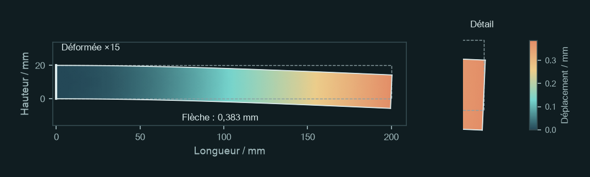
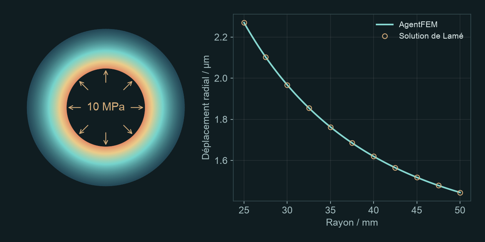
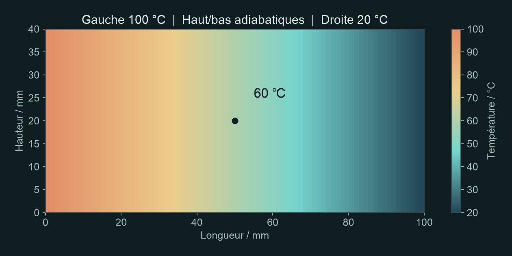
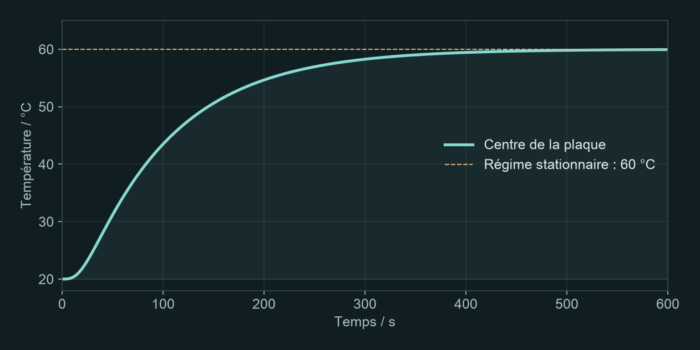

AGENTFEM / PREMIERS PAS
Premiers calculs par éléments finis avec l’IA
Quatre exercices courts. Copiez une consigne, lancez le calcul, puis modifiez une condition pour comparer les résultats.
Avant de commencer
Vérifiez que votre assistant IA peut exécuter AgentFEM. Codex, par exemple, peut utiliser la ligne de commande locale ou des outils MCP avec votre autorisation. Un assistant limité à la conversation, sans accès aux outils de calcul, ne peut pas exécuter ces simulations.
Ouvrez un dossier de travail pour les exercices et envoyez cette consigne à votre assistant IA :
Vérifie que tu peux exécuter AgentFEM. Indique sa version et le dossier où seront enregistrés les projets. Demande mon accord avant toute installation ou configuration. Pour le moment, vérifie uniquement l’environnement ; ne lance aucune simulation.
Une fois l’environnement prêt, envoyez les instructions ci-dessous. Attendez la réponse, puis choisissez un exercice et envoyez sa consigne.
Je vais t’envoyer un exercice précis. À sa réception, crée un nouveau projet AgentFEM, vérifie les paramètres et exécute le calcul. Conserve le modèle et les résultats. Fournis une figure et les valeurs principales avec leurs unités, précise le maillage et les paramètres du solveur, puis explique brièvement les résultats. Signale toute donnée indispensable manquante ou toute impossibilité d’exécuter le calcul. Pour le moment, réponds uniquement : « Prêt. Envoie-moi l’exercice. » Ne commence pas la modélisation, ne devine pas l’exercice et ne propose pas de sujets.
Pas encore installé ? Préparer l’environnement
Suivez le guide d’installation d’AgentFEM, vérifiez que agentfem doctor fonctionne, puis consultez le guide de connexion de l’assistant IA. Sous Windows, utilisez WSL2. La documentation MCP de Codex décrit la connexion des outils. Une fois la configuration terminée, il suffit de copier une consigne pour commencer.
Commencer par une déformée
Quelle sera la flèche de cette poutre ?
Encastrez l’extrémité gauche d’une poutre en acier et appliquez une force vers le bas à droite. Observez la déformée, puis relevez la flèche à l’extrémité libre.
Avec AgentFEM, calcule une poutre en acier encastrée à gauche : longueur 200 mm, hauteur 20 mm, épaisseur 10 mm, module d’Young 210 GPa et coefficient de Poisson 0,3. Répartis uniformément une force totale de 200 N vers le bas sur la face d’extrémité droite. Utilise un modèle 2D en contraintes planes, en élasticité linéaire et petits déplacements, sans pesanteur. Fournis la déformée et le déplacement vers le bas au milieu de l’extrémité droite (mm). Indique le facteur d’amplification de la déformée sur la figure.

Résultats attendus
Une représentation de la déformée et le déplacement vers le bas au milieu de l’extrémité droite. L’extrémité gauche reste fixe ; le déplacement augmente vers l’extrémité libre.
Flèche de référence : 0,383 mm
Repérez le milieu de l’extrémité droite, puis vérifiez la valeur et l’unité. La déformée est amplifiée 15 fois sur cette figure ; la flèche réelle n’est que d’environ 0,38 mm. La théorie des poutres donne environ 0,381 mm : un premier contrôle de l’ordre de grandeur.
Pour aller plus loin
Porte la force totale à 400 N, sans modifier les autres conditions, et relance le calcul. Compare les deux flèches et leur rapport. Explique le résultat à l’aide de la théorie des poutres.
En élasticité linéaire et petits déplacements, doubler la charge doit approximativement doubler le déplacement. Vous venez de réaliser votre première comparaison paramétrique.
Notes de modélisation
En 2D, l’épaisseur de 10 mm doit être prise en compte pour convertir la force totale en traction surfacique : celle-ci vaut ici 1 MPa. Le calcul de référence utilise des éléments quadratiques et un maillage de 80 × 8. Les pics de contrainte aux coins de l’encastrement ne permettent pas de conclure sur la résistance.
Un autre chargement mécanique
De combien le cylindre se dilate-t-il sous pression ?
Appliquez une pression interne uniforme à un cylindre épais. Mesurez le déplacement de la paroi intérieure vers l’extérieur et comparez-le à celui de la paroi extérieure.
Avec AgentFEM, calcule un cylindre épais : rayon intérieur 25 mm, rayon extérieur 50 mm, longueur 100 mm, module d’Young 210 GPa et coefficient de Poisson 0,3. Applique une pression interne de 10 MPa. Laisse la paroi extérieure libre radialement et n’applique aucun effort de fond. Utilise un modèle axisymétrique élastique linéaire, avec un déplacement axial nul partout. Donne le déplacement radial de la paroi intérieure (μm) et son profil dans l’épaisseur à mi-longueur. Vérifie les résultats avec la solution de Lamé.

Résultats attendus
Le déplacement radial de la paroi intérieure et une courbe allant de la paroi intérieure à la paroi extérieure. Le déplacement radial est la distance parcourue vers l’extérieur, suivant le rayon.
Expansion intérieure de référence : 2,270 μm
L’anneau représente la section du cylindre. Sur la courbe de droite, l’abscisse va de la paroi intérieure à la paroi extérieure et l’ordonnée indique le déplacement vers l’extérieur. Le calcul par éléments finis doit être proche de la solution analytique.
Pour aller plus loin
Porte le rayon extérieur à 60 mm, sans modifier les autres conditions, et relance le calcul. Compare les deux déplacements radiaux de la paroi intérieure, vérifie-les avec la solution de Lamé et explique l’effet de l’épaississement.
Cette fois, vous modifiez la géométrie. Ne changez qu’une condition à la fois pour identifier clairement l’origine de la différence.
Notes de modélisation
Il s’agit d’un cylindre long idéalisé dont la déformation axiale est nulle, et non d’un récipient sous pression libre de s’allonger ou muni de fonds. Le maillage de référence comporte 40 divisions radiales et 4 divisions axiales, avec des éléments quadratiques. Le déplacement intérieur concorde avec la solution de Lamé.
De la mécanique à la thermique
Quelle température au centre de la plaque ?
Maintenez le bord gauche d’une plaque métallique au chaud et le bord droit au froid. Lorsque la température ne varie plus, quelle est sa valeur au centre ?
Avec AgentFEM, réalise un calcul 2D de conduction thermique stationnaire dans une plaque métallique de 100 mm de long et 40 mm de haut, de conductivité uniforme 45 W/(m·K). Maintiens le bord gauche à 100 °C et le bord droit à 20 °C. Les autres bords sont adiabatiques, sans source de chaleur interne. Fournis le champ de température, la température au centre (°C), le profil sur la ligne médiane horizontale et la densité de flux thermique vers la droite (W/m²).

Résultats attendus
Un champ de température décroissant de gauche à droite et la température au centre. En régime stationnaire, la température ne varie plus au cours du temps.
Température centrale de référence : 60,0 °C
Le centre est à mi-distance des deux bords. Avec un matériau uniforme, aucune source interne et des bords supérieur et inférieur adiabatiques, la température varie linéairement suivant la longueur. Elle vaut donc 60 °C au centre.
Pour aller plus loin
Porte la conductivité thermique à 90 W/(m·K), sans modifier les autres conditions, et relance le calcul. Compare les champs de température et les densités de flux thermique. Explique le résultat avec la loi de Fourier.
À températures imposées aux deux extrémités, doubler la conductivité augmente le flux thermique, mais ne modifie pas ce champ de température stationnaire. Modifier un paramètre ne change pas nécessairement la carte de couleurs.
Notes de modélisation
Le calcul porte uniquement sur la conduction dans le solide, sans écoulement d’air ni contraintes thermiques. Le maillage de référence est de 80 × 16. Le calcul utilise les K ; l’affichage est converti en °C.
Suivre l’évolution dans le temps
Comment la plaque se réchauffe-t-elle ?
Reprenez la même plaque, initialement à 20 °C partout. Cette fois, étudiez la montée en température, et pas seulement l’état final.
Avec AgentFEM, simule l’échauffement transitoire d’une plaque métallique 2D de 100 mm de long et 40 mm de haut, initialement à 20 °C. Garde constants la conductivité thermique de 45 W/(m·K), la masse volumique de 7800 kg/m³ et la capacité thermique massique de 500 J/(kg·K). Dès le début du chauffage, maintiens le bord gauche à 100 °C et le bord droit à 20 °C. Les autres bords sont adiabatiques, sans source de chaleur interne. Calcule jusqu’à 600 s avec Euler implicite et un pas de temps de 2 s. Fournis la courbe et un tableau de la température au centre (°C). Enregistre le champ de température toutes les 10 s dans une série temporelle lisible dans ParaView.

Résultats attendus
Une courbe de montée en température au centre et une série temporelle du champ de température à visualiser en animation.
Température centrale à 600 s : 59,94 °C
Le centre n’atteint pas instantanément 60 °C : la chaleur doit se diffuser depuis la gauche. Observez le début de la montée en température, puis l’aplatissement de la courbe. Comparez avec le régime stationnaire de l’exercice précédent.
Pour aller plus loin
Réduis le pas de temps à 1 s, sans changer le maillage ni les autres conditions, et relance le calcul. Superpose les deux courbes de température au centre. Compare l’écart maximal aux instants communs et l’écart à 600 s pour juger si le pas initial est suffisant.
Vous vérifiez ici un paramètre numérique. Si les résultats restent proches en réduisant le pas de temps, vous pouvez interpréter l’évolution thermique avec davantage de confiance.
Notes de modélisation
Le calcul de référence utilise Euler implicite sur 300 incréments. L’équilibre n’est pas imposé à 600 s : 59,94 °C est la température calculée à cet instant. Conservez le fichier XDMF et son fichier H5 associé dans le même dossier. Dans ParaView, ouvrez le XDMF, sélectionnez Temperature et lancez l’animation.
Reprendre la démarche pour un autre problème
Plutôt que « fais une simulation », précisez : quelle structure, quel chargement ou chauffage, quels résultats ? Voilà l’essentiel d’une consigne utile. Inutile de l’écrire comme un programme.
Vous n’avez pas à préciser tous les détails dès le départ. Donnez les conditions connues et demandez à l’assistant de clarifier celles qui manquent. Après le calcul, demandez : « Que se passe-t-il si je ne change que cette condition ? »
Si l’IA ne fournit que du code, ou si les résultats diffèrent
Demandez : « Exécute le calcul et ouvre la figure. Indique où sont enregistrés le projet et les résultats. En cas d’échec, explique pourquoi ; ne présente pas un résultat attendu comme un résultat calculé. » Si les valeurs diffèrent légèrement, vérifiez les unités, les charges, les conditions aux limites, les éléments et le maillage, puis le pas de temps. Ne comparez pas seulement les couleurs.
Calculs de référence : 7 octobre 2026, AgentFEM 0.4.0.dev0 / DOLFINx 0.11.0. Valeurs et versions. Ces modèles pédagogiques ne constituent pas une évaluation de sécurité industrielle.